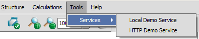
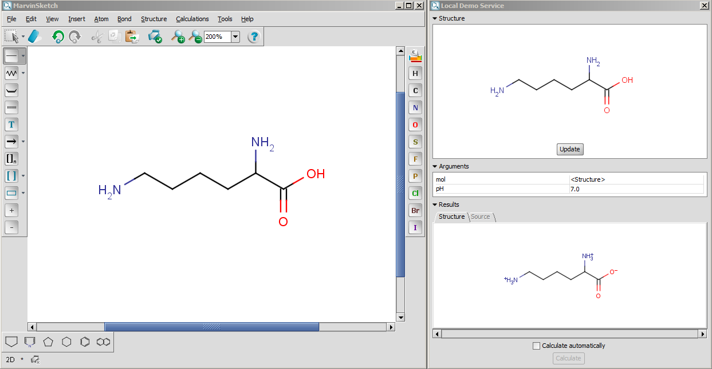
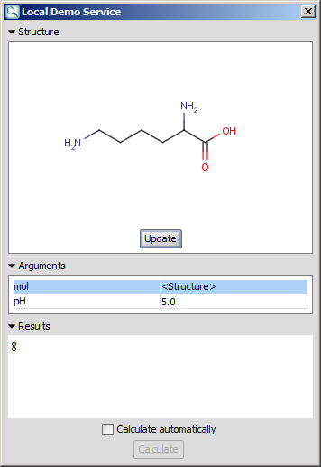
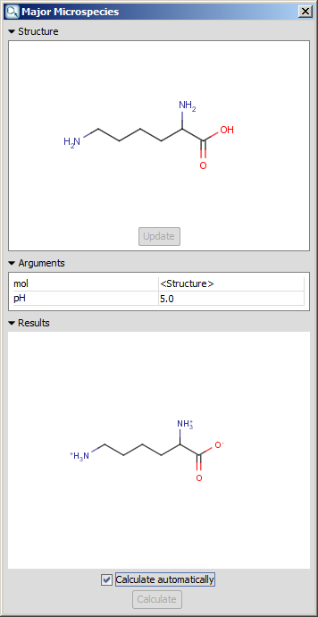
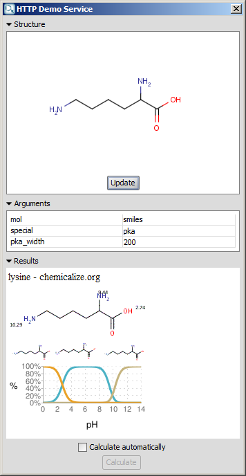

Marvin Services
Services is a handy module of Marvin that helps to integrate
third-party calculations* via
the MarvinSketch GUI.
The linked services will appear under the Tools > Services menu. The menu contains the
names of the services in a formerly set
order.
Figure 1. The location of the set services

Note: When no Services are set in MarvinSketch, the Tools > Services menu will be disabled.
How to use
Select the desired third-party calculation under Tools > Services. The opening new window
— right of MarvinSketch — has the same title as the service name.
Figure 2. MarvinSketch window (left) with the new service window (right)

The collapsible panels of the window are the following:
- Structure: The upper panel will show the structure in
question. The structure can only be edited in the MarvinSketch window.
- Update button: If the structure is changed in MarvinSketch, press this button to
refresh the structure for the calculation. Note: The button will be disabled if
Calculate automatically is checked;
- Arguments: The middle panel shows the calculation parameters. Unless the parameter is bold, it can be modified;
- Result: The lower panel will show the result of the calculation. The panel can
present different output formats, e.g., string, structure, web page;
- Calculate automatically check box: If the structure is changed in MarvinSketch, the update of the structure and the
calculation will run automatically. Note: In case it is checked, the Calculate and Update buttons will be inactive;
- Calculate button: Calculates and retrieves the result.
Figure 3. Different output type examples
| String |
Structure |
Web page |
|  |
 |
 |
*All calculations not provided in ChemAxon's Marvin Beans or in its JChem package are referred
to third-party calculations.